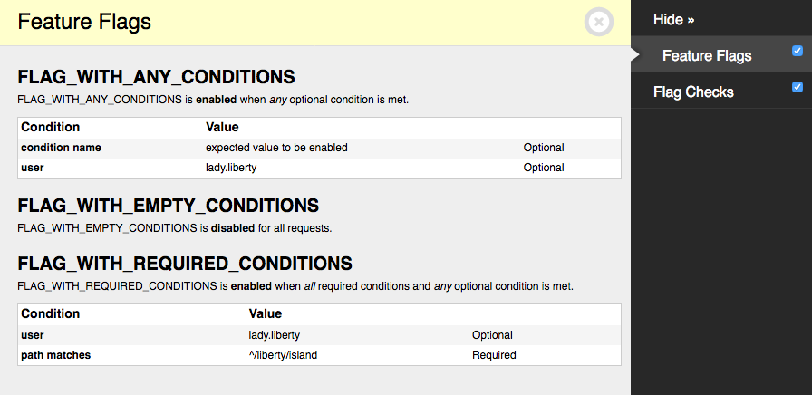

Debugging¶
Warnings¶
- `flags.E001`
-
Django-Flags includes a Django system check to check for flags that have non-existent conditions on start-up.
?: (flags.E001) Flag FLAG_WITH_ANY_CONDITIONS has non-existent condition "condition name" HINT: Register "condition name" as a Django-Flags condition.
Exceptions¶
RequiredForCondition¶
Django-Flags allows conditions to require any number of keyword arguments that must be passed when checking the condition. If a condition does not receive the necessary arguments, it may raise a RequiredForCondition exception, for example:
Traceback (most recent call last):
…
raise RequiredForCondition("request is required for condition 'path'")Django Debug Toolbar Panels¶
Flag conditions¶
Django-Flags comes with a panel for Django Debug Toolbar that will list all flags, their conditions, and the state of each flag for the current request.

To enable the panel first follow the installation and setup instructions for Django Debug Toolbar. Then add flags.panels.FlagsPanel to the DEBUG_TOOLBAR_PANELS setting:
DEBUG_TOOLBAR_PANELS = [
# …
'flags.panels.FlagsPanel',
# …
]Flag checks¶
Django-Flags comes with a panel for Django Debug Toolbar that will show which flags were checked during a request, how many times it was checked, and what the results of those checks were.

To enable the panel first follow the installation and setup instructions for Django Debug Toolbar. Then add flags.panels.FlagChecksPanel to the DEBUG_TOOLBAR_PANELS setting:
DEBUG_TOOLBAR_PANELS = [
# …
'flags.panels.FlagChecksPanel',
# …
]